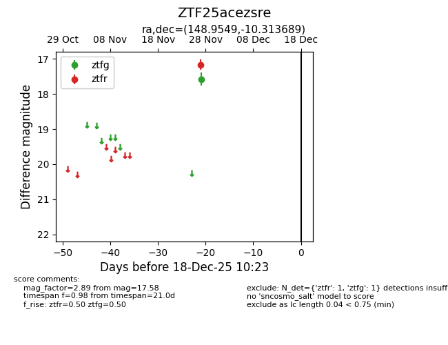
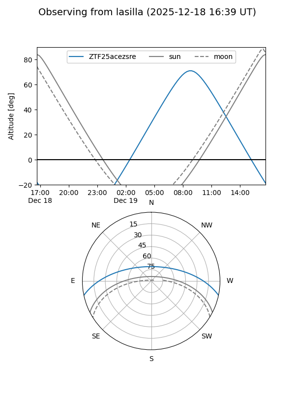
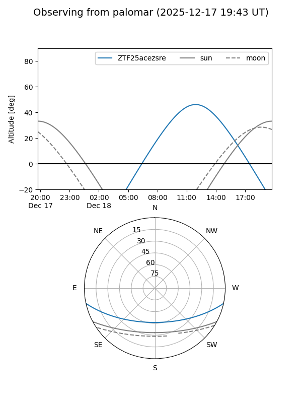

ZTF25acezsre
Target ZTF25acezsre at 2025-12-18 11:17
Aliases and brokers:
FINK: fink-portal.org/ZTF25acezsre
Lasair: lasair-ztf.lsst.ac.uk/objects/ZTF25acezsre
ALeRCE: alerce.online/object/ZTF25acezsre
alt names
ZTF25acezsre (ztf,fink_ztf)
Coordinates:
equatorial (ra, dec) = 148.9549,-10.31369
equatorial (HMS+DMS) = 09:55:49.17,-10:18:49.28
galactic (l, b) = (248.2041,+33.31444)
Photometry
last ztfg=17.58, ztfr=17.17
1 ztfg, 1 ztfr detections
Lightcurve

Visibility


Additional plots